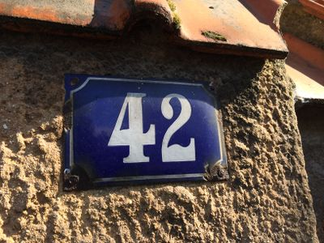

La Base Adresses Nationale Ouverte (BANO) est une initiative d’OpenStreetMap France. Elle a pour objet la constitution d’une base libre la plus complète possible de points d’adresse à
l’échelle de la France. Vous trouverez sur cette page les accès aux différentes
problématiques soulevées par la constitution d’une base d’adresses.
Plus d'informations sur le Wiki d'OpenStreetMap
Les données produites par BANO
Elles sont régénérées et publiées chaque nuit avec les améliorations faites dans OpenStreetMap au cours de la journée précédente. Elles intègrent aussi à J+1 les publications de données au format BAL de https://adresse.data.gouv.fr/ (Cadastre et BAL locales)
Accès aux donnéesPlusieurs manières de contribuer
Chacun·e peut améliorer la BANO en contribuant à OpenStreetMap sur la thématique des adresses.
Outils spécifiques pour BANO
- Pifomètre, le rapprochement OSM/FANTOIR qui permet de visualiser sous forme de liste les voies rapprochées et non rapprochées, par commune.
- La liste des codes FANTOIR erronés à corriger
- La liste des codes FANTOIR annulés à remplacer
- Quelques statistiques départementales des rapprochements par commune
- Quelques statistiques nationales des rapprochements par département
- Les voies non rapprochées avec un maximum d'adresses
- Les voies les plus récentes manquantes dans OpenStreetMap
Le code source est disponible sur GitHub via 2 projets : le projet BANO et les outils de visualisation et d'analyse FANTOIR